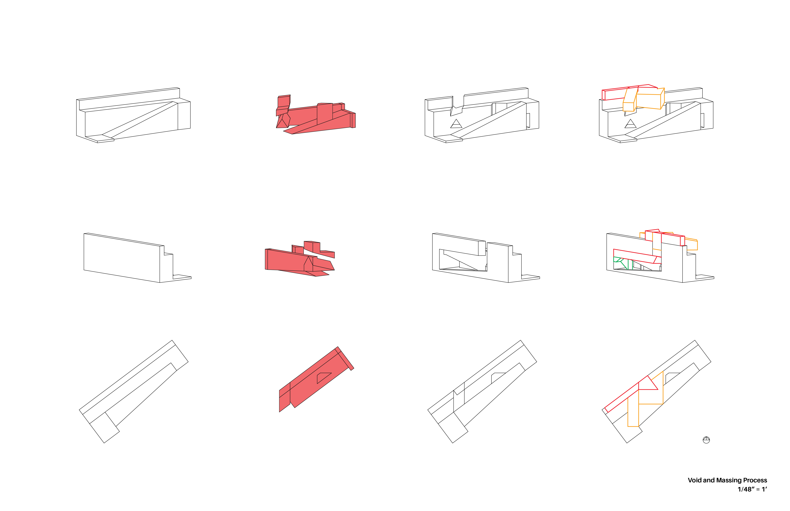
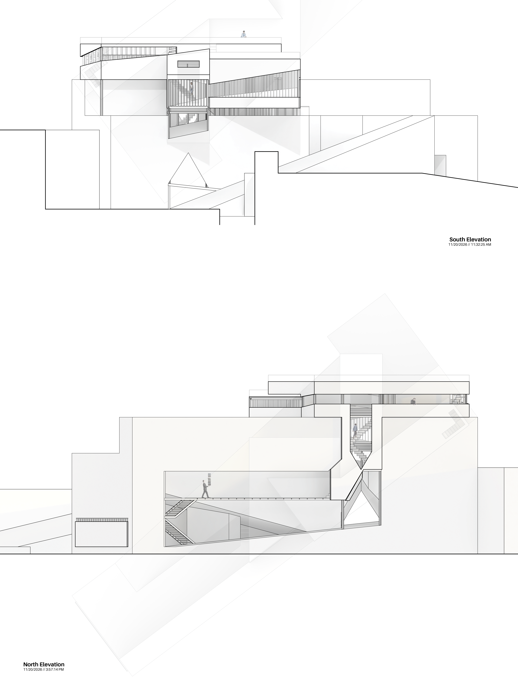

Spring 2026
The purpose of this project was to develop a landscape and structure suited for a writer's retreat. First, voids were cut out of an original ground site in order to respond to light. My objective was to allow light to penetrate from the south side which was often fully baked in light to the north side which was often in shade. Additionally, cavernous voids were cut into the back face with holes punching through to allow more precise control of the light. Next came the process of planning the programs and massing the building. The library was placed in the cavern because of its ability to direct light away from books. The main path of circulation that a visitor would take would be to walk through the triangular hole connecting the north and south sides into the library. Then, going up a snaking series of stairs and walkways, writers are taken through the private writer's space with a bedroom, kitchen, and other amenities. Up past the private area is where three individual writing spaces are found, overlooking the edge of the sight. Finally, the final flight of stairs leads to an open rooftop courtyard. While the private mass is aligned with north, the public mass is oriented to the plane of the ground, creating a physical distinction in program. However, this distinction is contrasted by the "plug-in" logic of the intersection of the masses; the private space is inserted into the public circulation with no walls in between to both allow light to penetrate through the central axis and to promote collaboration among writers. The final piece was the structural framing and facade. The project is made of three different layers: the exterior skin, the plank framing, and the interior skin. Both exterior and interior facades are peeled back to different degrees to create a loop around the upper structure, weaving together the public and private spaces.

Oblique elevations of the structure
